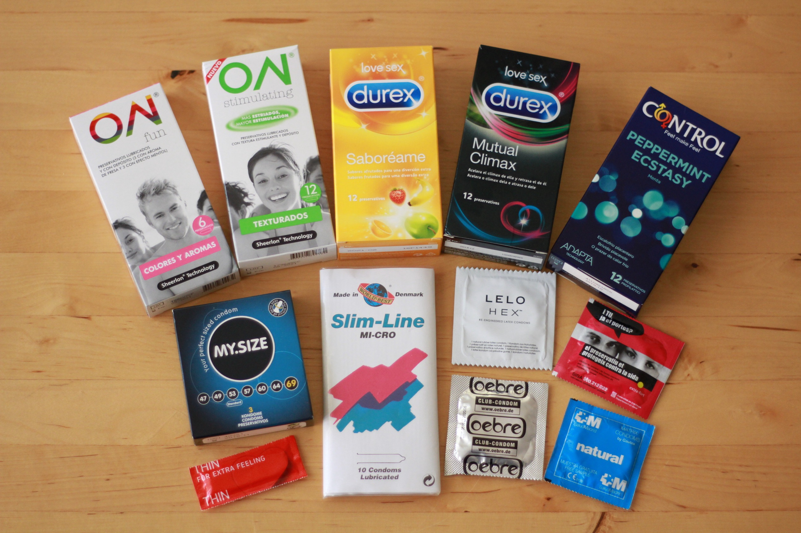
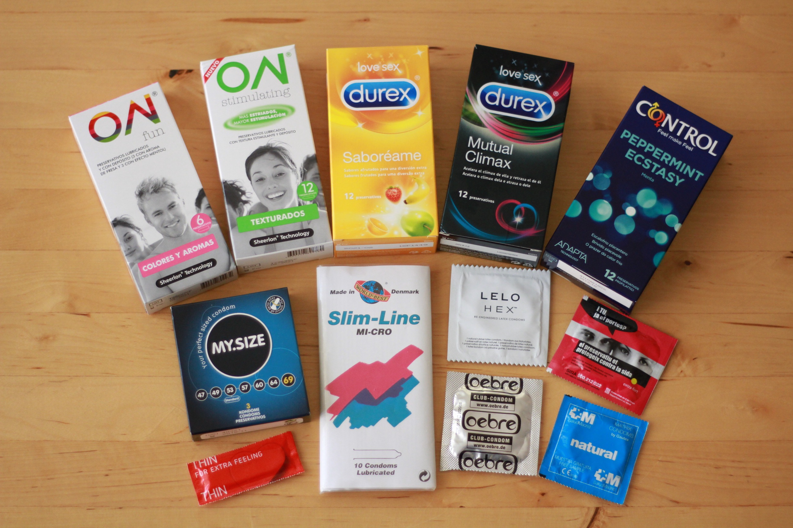

SEXO POR PRIMERA VEZ: UNA GUIA PARA NO CORRER RIESGOS
Hay muchas cosas que hay que tener en cuenta cuando se tiene sexo por primera vez.
Es posible que sientas curiosidad por saber qué se siente y cómo hacer frente a los problemas que puedan surgir.
Estos pensamientos son totalmente normales.
Lo mejor que puedes hacer para superar tus preocupaciones y disfrutar del momento es estar preparado.
Nadie sabe exactamente qué esperar de su primera relación sexual.
Puede que pierdas la virginidad en una relación, o que estés soltero.
Puede que la pierdas en la adolescencia o cuando seas un poco más mayor.
Puede que estés deseando perderla, o puede que te abrumen los nervios.
La situación de cada persona es diferente.
Mantener la seguridad durante tu primera relación sexual es un aspecto en el que definitivamente vale la pena pensar.
Tu pareja podría tener mucha más experiencia que tú, lo que podría ponerte en riesgo de contraer infecciones de transmisión sexual (ITS) si no se toman las precauciones adecuadas.
Con más de 376 millones de personas que contraen clamidia, gonorrea, sífilis o tricomoniasis cada año, es esencial proteger tu salud y entender el riesgo que puedes correr durante tu primera vez.
Para mas informacion precione la imagen

METODOS anticonceptivos
A menos que te estés planeando tener un hijo, debes utilizar métodos anticonceptivos para reducir la probabilidad de un embarazo no deseado o de contraer una ITS.
Los preservativos, como ejemplo de método de barrera, impiden que los espermatozoides lleguen al óvulo. Otros métodos, como la píldora anticonceptiva, alteran las hormonas de la mujer para impedir la liberación del óvulo.
El preservativo es la única forma de evitar simultáneamente el embarazo y las ITS, pero es importante recordar que ningún método de prevención tiene un éxito del 100%
Además de los preservativos y la píldora anticonceptiva, existe una gran variedad de métodos anticonceptivos alternativos para las mujeres, entre los que se incluyen:


 
Inyección anticonceptiva $499Implante anticonceptivo
Parche anticonceptivo
DIU (dispositivo intrauterino o espiral)
SIU (sistema intrauterino o espiral hormonal)
Preservativo femenino
Anillo vaginal
Evitar las ITS

Inyección anticonceptiva $499Implante anticonceptivo
Parche anticonceptivo
DIU (dispositivo intrauterino o espiral)
SIU (sistema intrauterino o espiral hormonal)
Preservativo femenino
Anillo vaginal
Evitar las ITS
RIESGOS QUE PUEDEN PASAR
Si no utilizas protección al mantener relaciones sexuales, las posibilidades de contraer una ITS son bastante mayores. Desgraciadamente, las ITS pueden hacer más daño que evitar las relaciones sexuales. Mientras que algunas infecciones se pueden curar con una medicación de corta duración, otras deben tratarse a largo plazo y pueden tener efectos perjudiciales para tu salud.
Aunque en los últimos años ha aumentado la educación en materia de salud sexual, todavía existen muchas dudas en torno a las distintas ITS.ITS para obtener más información sobre cada infección:
Clamidia
Gonorrea
VIH
Sífilis
Herpes
Verrugas genitales
VPH
Hepatitis A
Hepatitis B
Hepatitis C
Micoplasma
Ureaplasma
Gardnerella
Tricomonas
El dolor puede aparecer, pero no debe normalizarse
Algunas mujeres creen que la rotura del himen -una fina membrana que cubre la vagina- es la culpable del dolor
que experimentan durante su primera vez. Sin embargo, no todo el mundo tiene himen, e incluso las que lo tienen pueden no romperlo durante el coito vaginal.
"https://www.mspbs.gov.py/portal/26949/iquesta-que-riesgos-expone-la-relacion-sexual-sin-proteccion.html" 
Cuidarse en una relación sexual es fundamental para mantener la salud física y emocional
Aquí te presento algunas recomendaciones para cuidarte en una relación sexual:
Precauciones físicas
1. Usar protección: Utiliza condones o otros métodos de barrera para prevenir el contagio de enfermedades de transmisión sexual (ETS) y el embarazo no deseado.
2. Exámenes médicos: Realiza exámenes médicos regulares para detectar cualquier problema de salud.
3. Higiene personal: Mantén una buena higiene personal, especialmente después de tener relaciones sexuales.
4. Evitar el alcohol y las drogas: Evita consumir alcohol y drogas antes de tener relaciones sexuales, ya que pueden afectar tu juicio y aumentar el riesgo de accidentes.
Precauciones emocionales
1. Comunicación abierta: Mantén una comunicación abierta y honesta con tu pareja sobre tus deseos, necesidades y límites.
2. Respeto mutuo: Asegúrate de que tú y tu pareja se respeten mutuamente y se sientan cómodos con la relación.
3. No presionar: No presiones a tu pareja para que tenga relaciones sexuales si no se siente cómoda.
4. No sentirse obligado: No te sientas obligado a tener relaciones sexuales si no te sientes cómodo.
Precauciones para prevenir la violencia
1. No tolerar la violencia: No toleres la violencia física, emocional o verbal en tu relación.
2. Establecer límites: Establece límites claros y comunícalos a tu pareja.
3. Buscar ayuda: Busca ayuda si sientes que estás en una relación abusiva.
4. No sentirse culpable: No te sientas culpable por la violencia o el abuso en tu relación.
Recuerda que la salud y el bienestar son fundamentales en cualquier relación. Si tienes alguna inquietud o problema, no dudes en buscar ayuda.
Los métodos anticonceptivos son formas de prevenir el embarazo.
A continuación, te presento algunos de los métodos anticonceptivos más comunes:
Métodos anticonceptivos de barrera
1. Condón masculino: Un condón que se coloca en el pene antes de la relación sexual.
2. Condón femenino: Un condón que se coloca en la vagina antes de la relación sexual.
3. Diafragma: Un dispositivo que se coloca en la vagina para cubrir el cuello uterino.
4. Capuchón cervical: Un dispositivo que se coloca en el cuello uterino para prevenir el embarazo.
métodos anticonceptivos hormonales
1. Píldora anticonceptiva: Una píldora que se toma diariamente para prevenir el embarazo.
2. Inyección anticonceptiva: Una inyección que se administra cada 3 meses para prevenir el embarazo.
3. Anillo vaginal: Un anillo que se coloca en la vagina para liberar hormonas que previenen el embarazo.
4. Parche anticonceptivo: Un parche que se coloca en la piel para liberar hormonas que previenen el embarazo.
Métodos anticonceptivos de acción prolongada
1. Dispositivo intrauterino (DIU): Un dispositivo que se coloca en el útero para prevenir el embarazo.
2. Implante subcutáneo: Un implante que se coloca debajo de la piel para liberar hormonas que previenen el embarazo.
Métodos anticonceptivos naturales
1. Método de la temperatura basal: Un método que consiste en medir la temperatura corporal para determinar el momento de la ovulación.
2. Método del ritmo: Un método que consiste en calcular el momento de la ovulación según el ciclo menstrual.
3. Método de la observación de la mucosidad cervical: Un método que consiste en observar los cambios en la mucosidad cervical para determinar el momento de la ovulación.
Es importante mencionar que cada método anticonceptivo tiene sus propias ventajas y desventajas, y que es importante consultar con un profesional de la salud para determinar el método más adecuado para cada persona.
A continuación, te proporciono instrucciones paso a paso para colocar correctamente el condón femenino y masculino:
Condón Femenino
1. Lávalo con agua y jabón: Antes de usar el condón femenino, lávalo con agua y jabón para asegurarte de que esté limpio.
2. Retira el condón de su envase: Retira el condón femenino de su envase y asegúrate de que no esté dañado.
3. Coloca el anillo interior: Coloca el anillo interior del condón femenino en la entrada de la vagina, asegurándote de que esté bien colocado.
4. Desliza el condón: Desliza el condón femenino hacia adentro de la vagina, asegurándote de que esté bien colocado y que no esté doblado o arrugado.
5. Asegúrate de que esté bien colocado: Asegúrate de que el condón femenino esté bien colocado y que no esté deslizándose hacia afuera.
6. Retíralo después del sexo: Después del sexo, retira el condón femenino y deséchalo.
Condón Masculino
1. Lávalo con agua y jabón: Antes de usar el condón masculino, lávalo con agua y jabón para asegurarte de que esté limpio.
2. Retira el condón de su envase: Retira el condón masculino de su envase y asegúrate de que no esté dañado.
3. Coloca el condón en el pene: Coloca el condón masculino en el pene, asegurándote de que esté bien colocado y que no esté doblado o arrugado.
4. Desliza el condón: Desliza el condón masculino hacia abajo del pene, asegurándote de que esté bien colocado y que no esté deslizándose hacia arriba.
5. Asegúrate de que esté bien colocado: Asegúrate de que el condón masculino esté bien colocado y que no esté deslizándose hacia arriba.
6. Retíralo después del sexo: Después del sexo, retira el condón masculino y deséchalo.
Recuerda que es importante usar un condón cada vez que tengas relaciones sexuales para prevenir el contagio de enfermedades de transmisión sexual (ETS) y el embarazo no deseado.
Existen varios métodos anticonceptivos que pueden tomar las personas, dependiendo de sus necesidades y preferencias. A continuación, te presento algunos de los métodos anticonceptivos más comunes:
Métodos Anticonceptivos Hormonales
1. Píldora anticonceptiva: Una píldora que se toma diariamente para prevenir el embarazo.
2. Inyección anticonceptiva: Una inyección que se administra cada 3 meses para prevenir el embarazo.
3. Anillo vaginal: Un anillo que se coloca en la vagina para liberar hormonas que previenen el embarazo.
4. Parche anticonceptivo: Un parche que se coloca en la piel para liberar hormonas que previenen el embarazo.
Métodos Anticonceptivos de Barrera
1. Condón masculino: Un condón que se coloca en el pene antes de la relación sexual.
2. Condón femenino: Un condón que se coloca en la vagina antes de la relación sexual.
3. Diafragma: Un dispositivo que se coloca en la vagina para cubrir el cuello uterino.
4. Capuchón cervical: Un dispositivo que se coloca en el cuello uterino para prevenir el embarazo.
Métodos Anticonceptivos de Acción Prolongada
1. Dispositivo intrauterino (DIU): Un dispositivo que se coloca en el útero para prevenir el embarazo.
2. Implante subcutáneo: Un implante que se coloca debajo de la piel para liberar hormonas que previenen el embarazo.
Métodos Anticonceptivos Naturales
1. Método de la temperatura basal: Un método que consiste en medir la temperatura corporal para determinar el momento de la ovulación.
2. Método del ritmo: Un método que consiste en calcular el momento de la ovulación según el ciclo menstrual.
3. Método de la observación de la mucosidad cervical: Un método que consiste en observar los cambios en la mucosidad cervical para determinar el momento de la ovulación.
Es importante mencionar que cada método anticonceptivo tiene sus propias ventajas y desventajas, y que es importante consultar con un profesional de la salud para determinar el método más adecuado para cada persona.